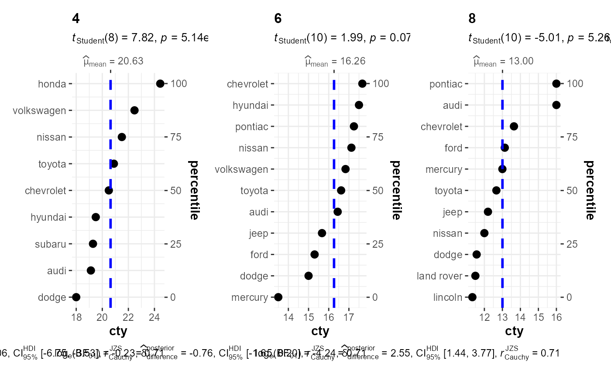

R/grouped_ggdotplotstats.R
grouped_ggdotplotstats.RdHelper function for ggstatsplot::ggdotplotstats to apply this
function across multiple levels of a given factor and combining the
resulting plots using ggstatsplot::combine_plots.
grouped_ggdotplotstats(data, x, y, grouping.var, title.prefix = NULL, xlab = NULL, ylab = NULL, stat.title = NULL, subtitle = NULL, caption = NULL, type = "parametric", test.value = 0, bf.prior = 0.707, bf.message = TRUE, robust.estimator = "onestep", conf.level = 0.95, effsize.type = "g", effsize.noncentral = TRUE, nboot = 100, k = 2, ggtheme = ggplot2::theme_bw(), ggstatsplot.layer = TRUE, point.color = "black", point.size = 3, point.shape = 16, results.subtitle = TRUE, centrality.para = "mean", centrality.color = "blue", centrality.size = 1, centrality.linetype = "dashed", centrality.line.labeller = TRUE, centrality.k = 2, test.value.line = FALSE, test.value.color = "black", test.value.size = 1, test.value.linetype = "dashed", test.line.labeller = TRUE, test.k = 0, ggplot.component = NULL, return = "plot", messages = TRUE, ...)
| data | A dataframe (or a tibble) from which variables specified are to be taken. A matrix or tables will not be accepted. |
|---|---|
| x | A numeric variable. |
| y | Label or grouping variable. |
| grouping.var | A single grouping variable (can be entered either as a
bare name |
| title.prefix | Character string specifying the prefix text for the fixed
plot title (name of each factor level) (Default: |
| xlab | Labels for |
| ylab | Label for |
| stat.title | A character describing the test being run, which will be
added as a prefix in the subtitle. The default is |
| subtitle | The text for the plot subtitle. Will work only if
|
| caption | The text for the plot caption. |
| type | Type of statistic expected ( |
| test.value | A number specifying the value of the null hypothesis
(Default: |
| bf.prior | A number between |
| bf.message | Logical that decides whether to display Bayes Factor in
favor of the null hypothesis. This argument is relevant only for
parametric test (Default: |
| robust.estimator | If |
| conf.level | Scalar between 0 and 1. If unspecified, the defaults return
|
| effsize.type | Type of effect size needed for parametric tests. The
argument can be |
| effsize.noncentral | Logical indicating whether to use non-central
t-distributions for computing the confidence interval for Cohen's d
or Hedge's g (Default: |
| nboot | Number of bootstrap samples for computing confidence interval
for the effect size (Default: |
| k | Number of digits after decimal point (should be an integer)
(Default: |
| ggtheme | A function, |
| ggstatsplot.layer | Logical that decides whether |
| point.color | Character describing color for the point (Default:
|
| point.size | Numeric specifying size for the point (Default: |
| point.shape | Numeric specifying shape to draw the points (Default: |
| results.subtitle | Decides whether the results of statistical tests are
to be displayed as a subtitle (Default: |
| centrality.para | Decides which measure of central tendency ( |
| centrality.color | Decides color for the vertical line for centrality
parameter (Default: |
| centrality.size | Decides size for the vertical line for centrality
parameter (Default: |
| centrality.linetype | Decides linetype for the vertical line for
centrality parameter (Default: |
| centrality.line.labeller | A logical that decides whether line labels
should be displayed for the centrality.para line (Default: |
| centrality.k | Integer denoting the number of decimal places expected
for centrality parameter label. (Default: |
| test.value.line | Decides whether test value is to be displayed as a
vertical line (Default: |
| test.value.color | Decides color for the vertical line denoting test
value (Default: |
| test.value.size | Decides size for the vertical line for test value
(Default: |
| test.value.linetype | Decides linetype for the vertical line for test
value (Default: |
| test.line.labeller | A logical that decides whether line labels should
be displayed for test.value line (Default: |
| test.k | Integer denoting the number of decimal places expected for
|
| ggplot.component | A |
| return | Character that describes what is to be returned: can be
|
| messages | Decides whether messages references, notes, and warnings are
to be displayed (Default: |
| ... | Arguments passed on to
|
# for reproducibility set.seed(123) # removing factor level with very few no. of observations df <- dplyr::filter(.data = ggplot2::mpg, cyl %in% c("4", "6", "8")) # plot ggstatsplot::grouped_ggdotplotstats( data = df, x = "cty", y = "manufacturer", grouping.var = "cyl", test.value = 15.5, title.prefix = "cylinder count", ggplot.component = ggplot2::scale_x_continuous( sec.axis = ggplot2::dup_axis(), limits = c(12, 24), breaks = seq(12, 24, 2) ), messages = FALSE )#> #>#> #>#> #>